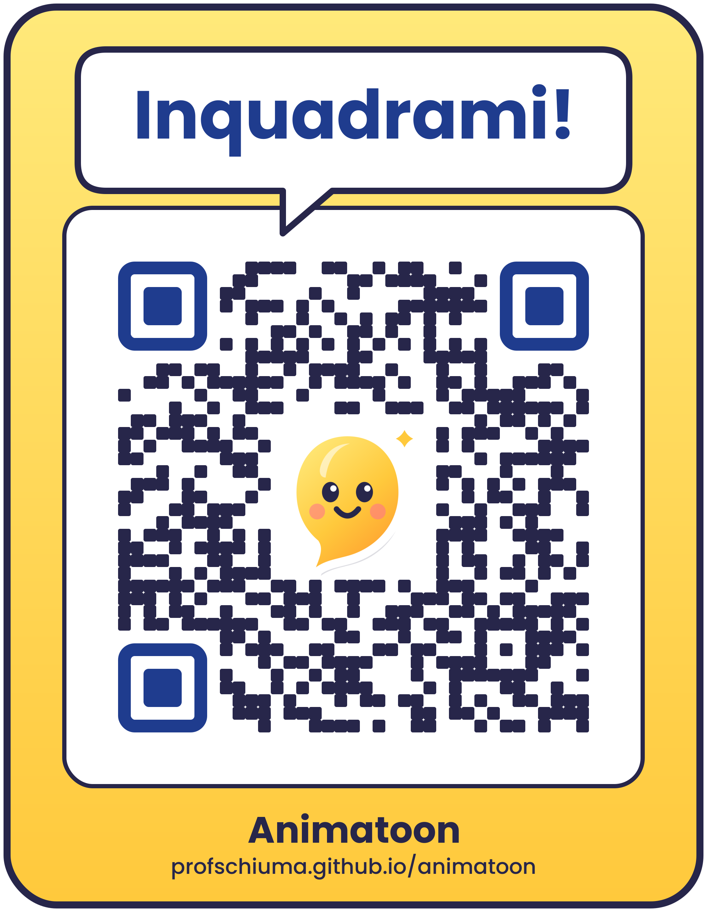

Crediti
Scintilla e la magia del cinema è un progetto editoriale ideato da Giuseppe Schiuma.
L'ambiente web interattivo Animatoon – Storie in movimento è accessibile gratuitamente online ed è rilasciato sotto licenza Creative Commons Attribuzione - Non commerciale - Condividi allo stesso modo 4.0 Internazionale (CC BY-NC-SA 4.0).
Tutti i disegni realizzati nei laboratori di questo libro appartengono ai loro rispettivi giovani autori.

Inquadra il codice per aprire Animatoon, oppure scrivi nel browser l'indirizzo profschiuma.github.io/animatoon